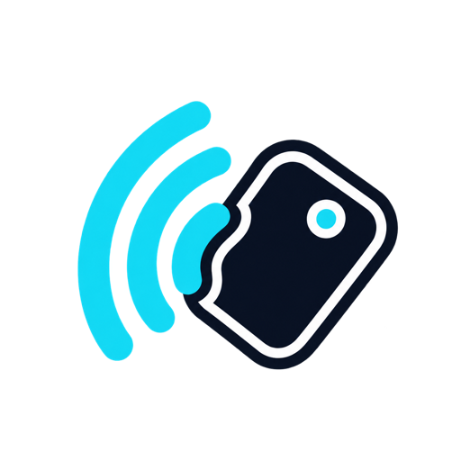
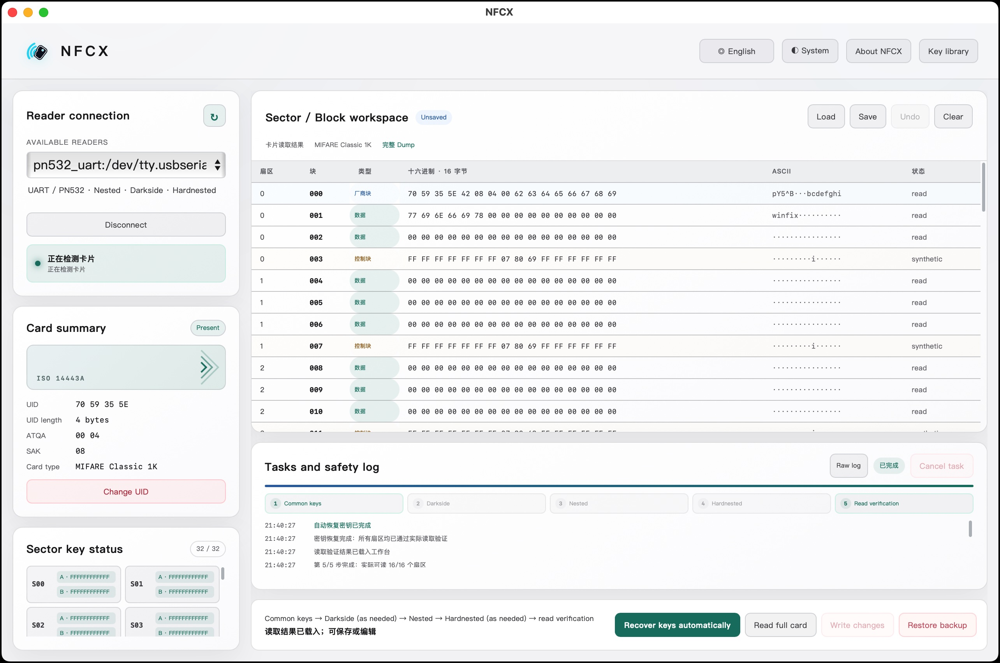

Cross-platform
A consistent desktop experience on macOS, Windows, and Linux.

NFCXNFC DESKTOP WORKBENCH
A focused desktop tool for authorized MIFARE Classic work: read, write, dump, manage keys, and recover access with a validated PN532 UART workflow.
NFCX is a cross-platform, open-source, easy-to-use GUI desktop tool for NFC on macOS, Windows, and Linux.
WHY NFCX
A consistent desktop experience on macOS, Windows, and Linux.
Source code is available under the MIT License.
Work with NFC cards through a GUI, without memorizing command-line arguments.
Common NFC operations are brought together in one clear application.
CAPABILITIES
Find readers, scan cards, and review UID, ATQA, SAK, and card information.
Authenticate blocks, save raw dumps, load them again, and verify every write by read-back.
Scan common keys and run the available PN532 UART recovery path when authorized.
Checks for dump, BCC, access bits, card changes, and guarded block 0 operations.
SUPPORTED READERS
Support is a promise, not a guess. NFCX’s release profile is tested with PN532 UART plus FT232RL.
Serial · libnfc pn532_uart · macOS / Windows / Linux builds
Serial · requires adapter driver and serial permissions
No NFCX hardware validation or enabled release profile yet
SCREENSHOTS

QUICK START
FREQUENTLY ASKED QUESTIONS
Yes. NFCX communicates with physical NFC cards through a compatible external reader.
The tested combination is PN532 + FT232RL. Other serial adapters may work, but FT232RL is recommended. Set the PN532 to UART/HSU mode and cross the data lines (PN532 RX to the serial adapter’s TX). A soldered connection is recommended to avoid unreliable jumper wires.
NFCX can work with physical access cards, but cards in an iPhone cannot be written like ordinary blank NFC cards. Consider using a writable NFC sticker and attaching it to the back of the phone.
For authorized testing, CUID cards are a useful choice. They commonly support changing the UID, and their all-FF Key A and Key B are convenient for testing.
It depends on the card type and access-control system design. Only work with cards and systems you own or are explicitly authorized to test.
Check the serial port, adapter driver, whether another program is using the device, and whether your current system account has permission to access the serial port.
PN532 + FT232RL plus several CUID test cards is the currently validated starter combination.
Yes. NFCX is built for macOS, Windows, and Linux; reader support still depends on the tested hardware configuration.
Block 0, which contains the UID, is not writable by default. Only some special Gen1/Gen2 cards, such as CUID Magic Cards or some Fudan cards, allow changes; ordinary cards should not be modified.
The system may check more than the UID: it may validate data in other sectors or use a rolling code. A matching UID therefore does not guarantee the same access rights.
They are the two authentication keys used by each MIFARE Classic sector. Access bits determine what each key can read or write; they are not universal passwords and should not be shared carelessly.
They are key-recovery techniques for known weaknesses in some MIFARE Classic cards. NFCX only exposes the related workflows for cards and systems you own or are explicitly authorized to test.
It depends on the manufacturer’s design. Some systems may use NFC, but many car keys use other radio protocols, encryption, or rolling codes. Only handle devices you own or are authorized to test.
No card UID, keys, dumps, card contents, or personal information are uploaded. Anonymous telemetry is optional on first launch and can be disabled at any time.
Yes. NFCX source code is released under the MIT License; third-party components included with releases are distributed under their respective licenses.
NFCX itself is MIT-licensed and generally permits commercial use. If you redistribute the app or its runtime components, you must also comply with the licenses of included third-party components.
Yes. You can sponsor NFCX on GitHub Sponsors.
PRIVACY
Anonymous telemetry is an opt-in choice at first launch and can be disabled later. It helps understand NFCX versions, operating-system distribution, and feature usage.
READY WHEN YOU ARE